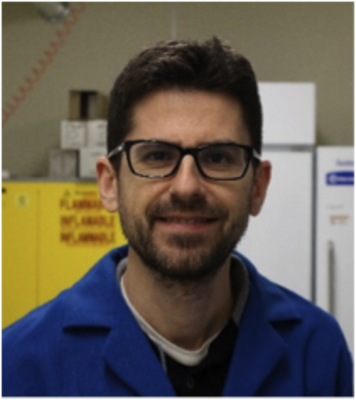
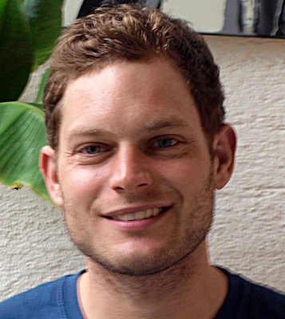
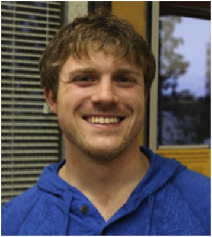
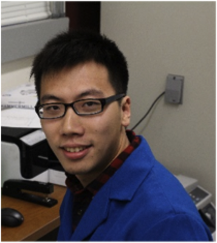

Faculty

Neal K. Devaraj
ndevaraj@ucsd.edu
Jeff Hasty
hasty@ucsd.edu
Lev Tsimring
ltsimring@ucsd.edu

Joseph Simpson
sjoseph@ucsd.edu
Vinothan Manoharan
vnm@seas.harvard.edu
Christopher Bowman
christopher.bowman@colorado.edu
Postgraduate Fellows
Henrike Niederholtmeyer

Roberto J. Brea
rbreafernandez@ucsd.edu

Fabian Ehret
Seth Alexander

HaoXing Wu
haw034@mail.ucsd.edu
Graduate Students

Brandon Cisneros
brandon.cisneros@gmail.edu

Christian Cole
cmcole@ucsd.edu

Mike Hardy
michaeldavidhardy@gmail.com

Andrew Rudd
arudd@ucsd.edu

Eric Zhou
cyzhou@ucsd.edu

Ahanjit Bhattacharya

Kayla Busby
Undergraduates

Vikram Shenoy

Natalya Ballard
nballard@ucsd.edu
Alumni
Jun Yang
School of Chemistry and Chemical Engineering, Shaanxi Normal University
Jolita Šečkutė
Scientist at Amgen in Drug Product Process Engineering
Brandon Nichols
Research Scientist at Isis Pharmaceuticals